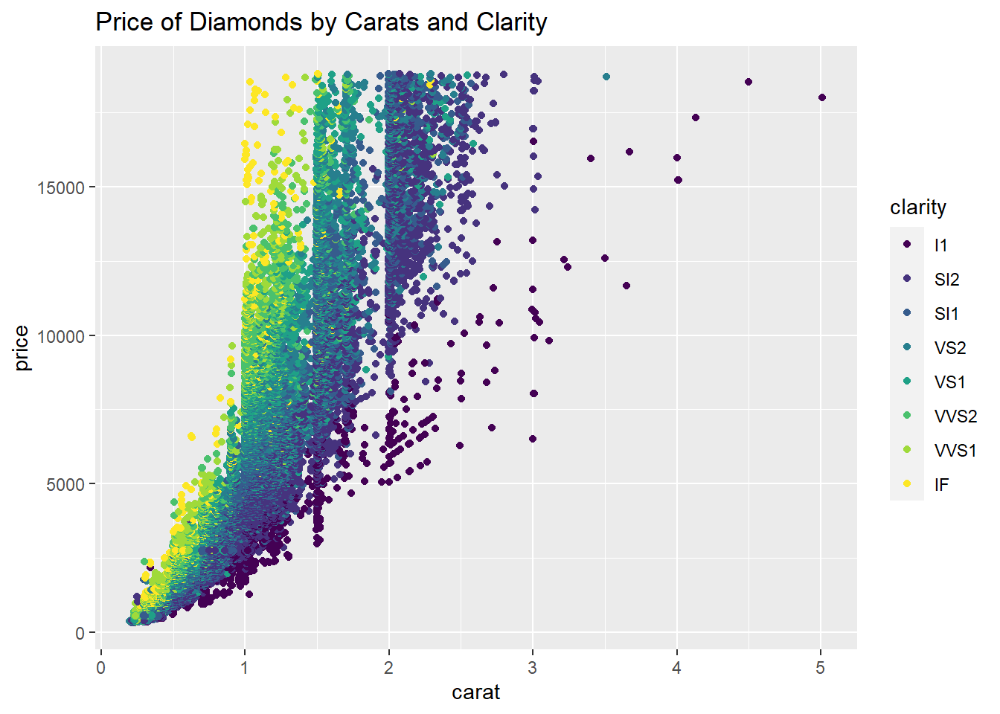

carat cut color clarity depth
Min. :0.2000 Fair : 1610 D: 6775 SI1 :13065 Min. :43.00
1st Qu.:0.4000 Good : 4906 E: 9797 VS2 :12258 1st Qu.:61.00
Median :0.7000 Very Good:12082 F: 9542 SI2 : 9194 Median :61.80
Mean :0.7979 Premium :13791 G:11292 VS1 : 8171 Mean :61.75
3rd Qu.:1.0400 Ideal :21551 H: 8304 VVS2 : 5066 3rd Qu.:62.50
Max. :5.0100 I: 5422 VVS1 : 3655 Max. :79.00
J: 2808 (Other): 2531
table price x y
Min. :43.00 Min. : 326 Min. : 0.000 Min. : 0.000
1st Qu.:56.00 1st Qu.: 950 1st Qu.: 4.710 1st Qu.: 4.720
Median :57.00 Median : 2401 Median : 5.700 Median : 5.710
Mean :57.46 Mean : 3933 Mean : 5.731 Mean : 5.735
3rd Qu.:59.00 3rd Qu.: 5324 3rd Qu.: 6.540 3rd Qu.: 6.540
Max. :95.00 Max. :18823 Max. :10.740 Max. :58.900
z
Min. : 0.000
1st Qu.: 2.910
Median : 3.530
Mean : 3.539
3rd Qu.: 4.040
Max. :31.800
frequency: count and group by/n()
# 3 frequency of colorsdiamonds %>%count(color)
# A tibble: 7 × 2
color n
<ord> <int>
1 D 6775
2 E 9797
3 F 9542
4 G 11292
5 H 8304
6 I 5422
7 J 2808
# 4 freq of cuts by colordiamonds %>%group_by(color,cut) %>%summarize(n())
`summarise()` has grouped output by 'color'. You can override using the
`.groups` argument.
# A tibble: 35 × 3
# Groups: color [7]
color cut `n()`
<ord> <ord> <int>
1 D Fair 163
2 D Good 662
3 D Very Good 1513
4 D Premium 1603
5 D Ideal 2834
6 E Fair 224
7 E Good 933
8 E Very Good 2400
9 E Premium 2337
10 E Ideal 3903
# ℹ 25 more rows
bar chart
# 5 bar chart
ggplot(diamonds,aes(x=color,fill=color))+geom_bar()
scatter plot
#6 scatter plot ggplot(diamonds,aes(x=carat,y=price,color=clarity)) +geom_jitter() +labs(title="Price of Diamonds by Carats and Clarity")

scales package: label_percent (stacked bar chart)
# example of label_percent from book R for Data Science library(ggrepel) library(scales)
Attaching package: 'scales'
The following object is masked from 'package:purrr':
discard
The following object is masked from 'package:readr':
col_factor
ggplot(diamonds, aes(x =cut, fill =clarity))+geom_bar(position ="fill")+scale_y_continuous(name ="Percentage", labels =label_percent())